TEL
TEL
 資料請求
資料請求
 来場予約
来場予約
 案内図
案内図
「名古屋城」東のお膝元としての地の格を、
今に継承する橦木町一丁目アドレス。

名古屋市市政資料館／徒歩5分（約390m）

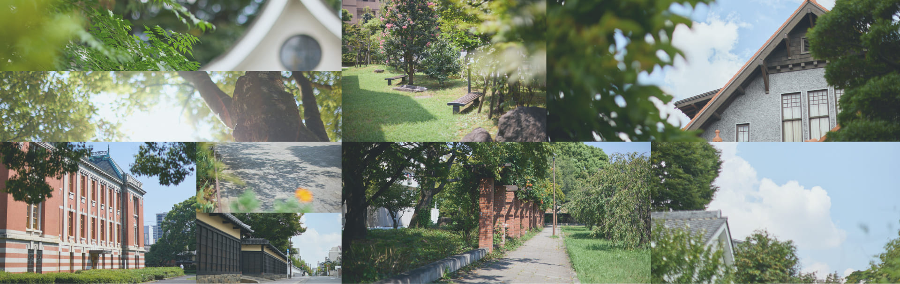
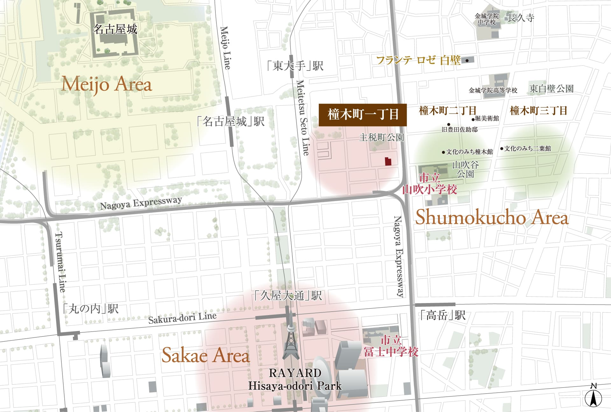
エリア概念図
当地区は名古屋開府以来の武家屋敷の形成に始まり、
明治以降の大きな変革を経て、風格ある門や塀が残された、
緑豊かな美しい町並みを形成。
昭和60年5月には、名古屋市町並み保存要綱に基づき、
並み保存地区に指定され、地域住民と行政が協力しながら、
歴史的景観の保全に取り組んでいる。
当地区は名古屋開府以来の武家屋敷の形成に始まり、
明治以降の大きな変革を経て、風格ある門や塀が残された、
緑豊かな美しい町並みを形成。
昭和60年5月には、名古屋市町並み保存要綱に基づき、
並み保存地区に指定され、地域住民と行政が協力しながら、
歴史的景観の保全に取り組んでいる。
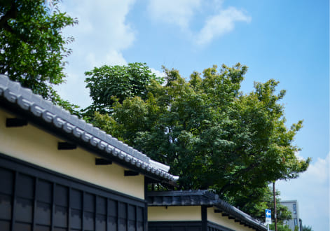
周辺の街並み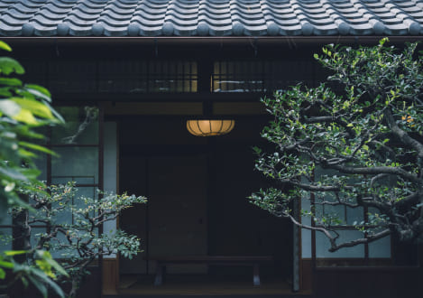
周辺の街並み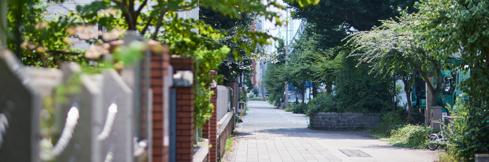
「名古屋城」の南に広がった商業地区に対し、東に延びた武家屋敷が「文化のみち」のルーツ
江戸時代から明治・大正、そして昭和に至る印象深い建物が残されている。
「名古屋城」の南に広がった商業地区に対し、
東に延びた武家屋敷が「文化のみち」のルーツ
江戸時代から明治・大正、そして昭和に至る
印象深い建物が残されている。
名古屋市市政資料館
徒歩5分（約390m）
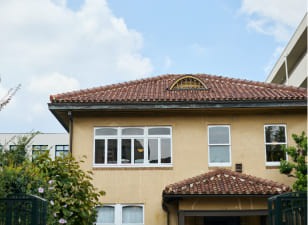
橦木館（旧井元爲三郎邸）
徒歩6分（約470m）
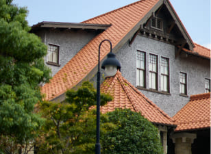
二葉館（旧川上貞奴邸）
徒歩9分（約710m）
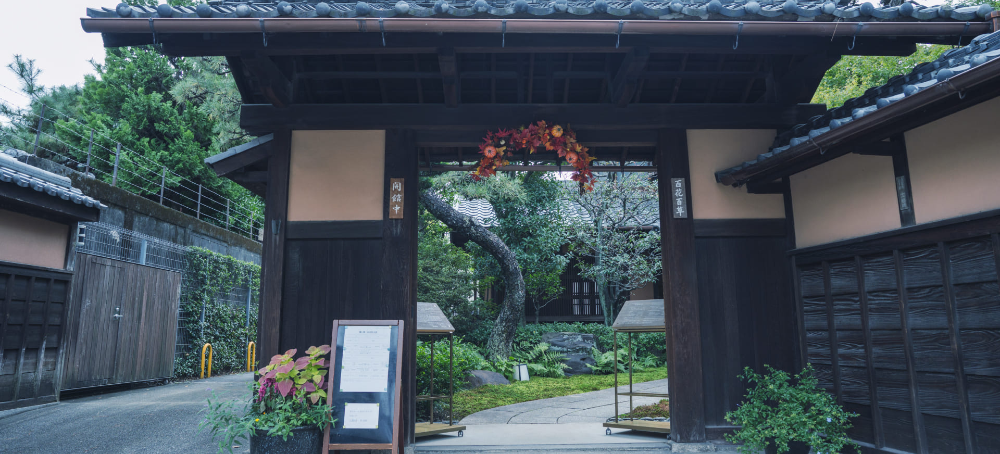
名古屋市内全域で評価されている「市立山吹小学校」「市立冨士中学校」が徒歩圏。
また、給食や延長保育のある「名古屋文化幼稚園」をはじめ、複数の幼稚園・保育園が揃っている。
名古屋市内全域で評価されている
「市立山吹小学校」「市立冨士中学校」が 徒歩圏。
また、給食や延長保育のある「名古屋文化幼稚園」をはじめ、
複数の幼稚園・保育園が揃っている。
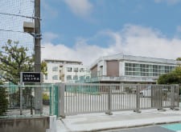
名古屋市立山吹小学校
徒歩5分（約350m）
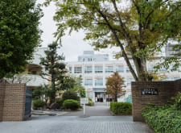
名古屋市立冨士中学校
徒歩11分（約880m）
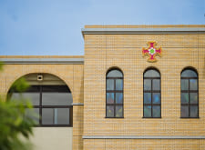
金城学院中学校
徒歩13分（約1,000m）
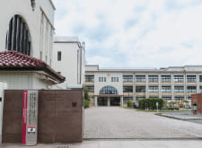
金城学院高等学校
徒歩11分（約870m）
※掲載の距離・徒歩分数は、地図上の概測距離80mを1分で算出（端数切り上げ）したものです。車の所要時間は、時速約40km/hで換算、自転車は250mを1分として、徒歩ルート上を走行した場合の参考表示です。※センターラインのある道路は横断歩道を渡るルートで計測しています。また、渋滞などの道路状況により異なります。※掲載の情報は2025年4月時点のものです。